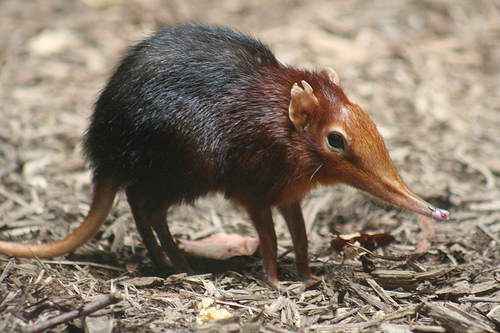
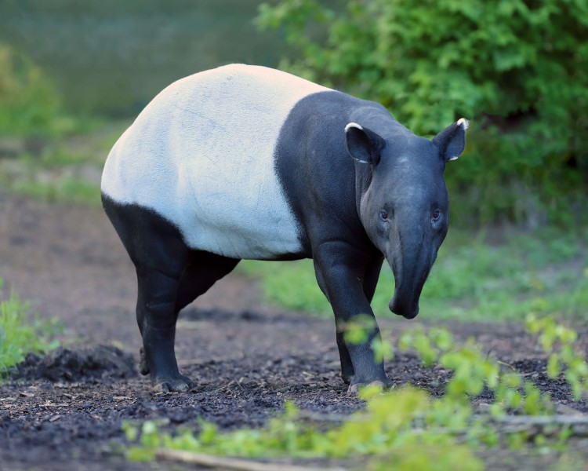

Last updated:13/2/2022
5 Endangered Animals in Malaysia

Black Shrew
A mouse-like creature known as the Black Shrew has only ever been seen in Kota Kinabalu, Sabah.
The lone creature hunts insects for food and has been known to attack other individuals.
It is so uncommon and restricted to that area that no one is truly sure if it is still extinct or just extremely endangered.

Borneo Pygmy Elephant
Borneo Pygmy Elephant.With shorter trunks, a longer tail, and bigger ears than other Asian elephant species,
this beautiful and small elephant species is less aggressive. These are generally located close to the Kinabatangan River in Sabah.
Even now, poachers continue to target them for their husks, and the need for palm oil poses a threat to their further extinction.

Sumatran Rhinoceros
With a weight range between 500 and 800 kilos, the Sumatran Rhinoceros is the world's smallest rhinoceros.
There are presently just three rhinos remaining in the world according to known statistics due to poaching.
Due to her poor condition and the vets' inability to even collect her eggs, the sole last female Sumatran rhino was believed to be dying in December 2019.

Proboscis Monkey
The Proboscis Monkey, distinct in appearance with a long snout and huge stomach, was formerly common in Borneo's coastal mangroves.
Since 2000, it has been classified as endangered due to an 80% decline in population over the past three decades, with an estimated 7,000 individuals remaining.

Pangolins
Due to the great demand for its scales, flesh, and skin, which are said to have therapeutic properties, Pangolins are among the most widely trafficked protected species in the world.
The international commerce of all species, including the Sunda Pangolin, was outlawed in 2016 by the Convention on International Trade in Endangered Species (CITES).
Source: 8 Endangered Animals in Malaysia | lokalocal.com
Last updated: 18/01/2023
Are Malayan Tapir Dying?

Their closest living relatives are actually rhinoceros and horses. According to the Tapir Specialist Group, an organization that works to conserve their habitat – tapirs are living fossils. The tapir’s major role is in the dispersing of seeds. Tapirs are known herbivores and eat a variety of seasonal fruits. They can typically be found underneath trees, eating the fruits that fall from them.
Those seeds would later sprout and grow into new trees, according to the Tapir Specialist Group. There are only four types of tapirs remaining in the world – the lowland tapir, mountain tapir and Baird’s tapir. Whereas the Malayan tapir – the largest of the four, is the only surviving member of its species in Asia. It was reported that there are about only 2,500 Malayan tapirs left in the world.
The main threat to Malayan tapirs is human activity such as deforestation for agricultural purposes, flooding caused by the damming of rivers for hydroelectric projects, and illegal animal trade.
The declining number of Malayan tapirs is because of continued habitat loss from illegal logging and the lack of protection of most areas where the animal is known to reside.
However, the population of the Malayan tapir has also declined in the country because of the loss of their forest habitat and in recent years – roadkill. Last January, in the southern state of Johor in Malaysia, it was reported that three tapirs were found dead in a span of just one month due to roadkill.
According to Malaysia’s Department of Wildlife and National Parks (Perhilitan), in 2017, a total of 25 tapirs died after being hit by vehicles.
The Malayan tapir reproduces more slowly than most mammals, and it will be difficult to conserve this animal since its pregnancies can last up to 14 months. The first tapir conservation center in Malaysia will be built, with an emphasis on tapir rehabilitation and a breeding programme, according to a 2019 announcement by Malaysia's Department of Wildlife and National Parks (Perhilitan).
Will the Malayan tapir live to see the eyes of future generations, or will it meet the same end as other species that have previously perished?
Source: Malayan tapirs are dying | The ASEAN Post
Last updated: 27/02/2023
About Malayan Tiger

Malaysia must show leadership in wildlife rehabilitation to save the Malayan Tiger and other threatened species. Malayan Tiger is one of the smallest tiger species can be found throughout the southern and central parts of the Malay Peninsula and southern parts of Thailand. It is the national symbol of Malaysia.
In fact, it was only recognised as a tiger subspecies in 2004. In the past, the Malayan tiger and Indochinese tiger were thought to be the same. The body of this species is orange-coloured with thin black stripes that perfectly conceals its motive in the background when stalking prey or retreating into seclusion and safety.
Like all tiger species, the Malayan tiger is a solitary animal, although they can be seen in numbers during the mating period (November – March) when females go into heat.
During this period, females usually leave their scents to communicate their availability to potential mates. In contrast, the males use scent to mark their territory. Additionally, they can also communicate using different vocalizations – chuffs, moans, growls and roars.
With only a few hundred Malayan tigers in the wild, Malaysia is on the brink of losing its only tiger species. And the world is closer to losing another of its tiger subspecies. To date, 3 tiger subspecies have gone extinct: the Bali tiger, the Caspian tiger, and the Javan tiger. Habitat loss and fragmentation are leading causes that can bring prey shortages resulting in the decline in tiger numbers in the wild.
Tigers typically have a larger home range, but with the current rate of deforestation and urbanization, they are being forced to retreat in fragmented patches of forest. Perhaps, it is not surprising that human-tiger conflict has risen dramatically in the past couple of years. Other threats to the surviving Malayan tiger population include illegal poaching and hunting for its body parts.
Source: Malayan Tiger | Malaysian Wildlife